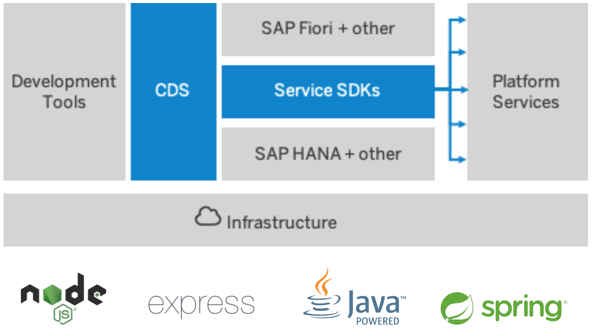

CAP
SAP Cloud Application Programming Model
für UI5 Entwickler
Gregor Wolf
Was ist CAP?

Offen aber mit eigener Meinung
| CAP hat eine Meinung | CAP ist offen |
|---|---|
| Übergeordnete Konzepte | Zugriff auf niedrigere Schichten |
| Bewährte Praktiken sofort einsatzbereit | Anpassungen durch eigne Logik |
| Eingebaute Untersützung für SAP Fiori und SAP HANA | Offen für andere UI- und Datenbanktechnologien |
| Untersützung für bestimmte Entwicklungsumgebungen | Mit @sap/cds-dk für die Untersützung anderer Editor und IDE's |
Vergleich
| Funktion | ABAP | CAP |
|---|---|---|
| IDE | SE80 / AiE | SAP Business Application Studio (BAS) / VS Code / vim / ... |
| Datenbanktabellen | SE11 | CDS |
| OData Service Entwickeln | SEGW / CDS | CDS |
| Geschäftslogik | ABAP | Java oder JavaScript |
| OData Service Bereitstellen | /IWFND/MAINT_SERVICE | cds watch / cds run |
| Testen | /IWFND/GW_CLIENT | REST Client, curl, wget |
| Applikationsserver | SAP Application Server ABAP SAP Business Technology Platform ABAP Environment (Stempunk) |
Java oder Node.JS runtime in SAP Business Technology Platform Cloud Foundry oder Kyma (Kubernetes) oder SAP HANA XSA (on premise) Nicht von SAP untersützt: Microsoft Azure, AWS, Google Cloud Platform |
| Datenbank | SAP DB’s: HANA, ASE, MaxDB Oracle, MS SQL Server, IBM DB2 |
Lokale Entwicklung: sqlite Community Projekt cds-pg for PostgreSQL Production: SAP HANA |
Community Project cds-pg
cds-pg: PostgreSQL adapter for SAP CDS (CAP)
Gewinner des SAP Devtoberfest 2020.
Anforderung
Aufgrund der Corona-Vorschriften ist unser
Besucherzentrum verpflichtet,
die Besucher beim betreten
und beim verlassen des Gebäudes
zu registrieten
Auf geht's
im SAP Business Application Studio
Einrichtung der Entwicklungsumgebung
auch für Windows
Links
Wesentliche Erkenntnisse
SAP Cloud Application Programming Model (CAP)
- Schnell zu API und UI
- Verfügbar für Java und Node.JS
- Untersützt die SAP Business Technology Platform
und SAP HANA XSA on Premise
Kontakt
Gregor Wolf,
Computerservice Wolf
gregor@computerservice-wolf.com
@wolf_gregor
| Business Card | |||
|---|---|---|---|
 |